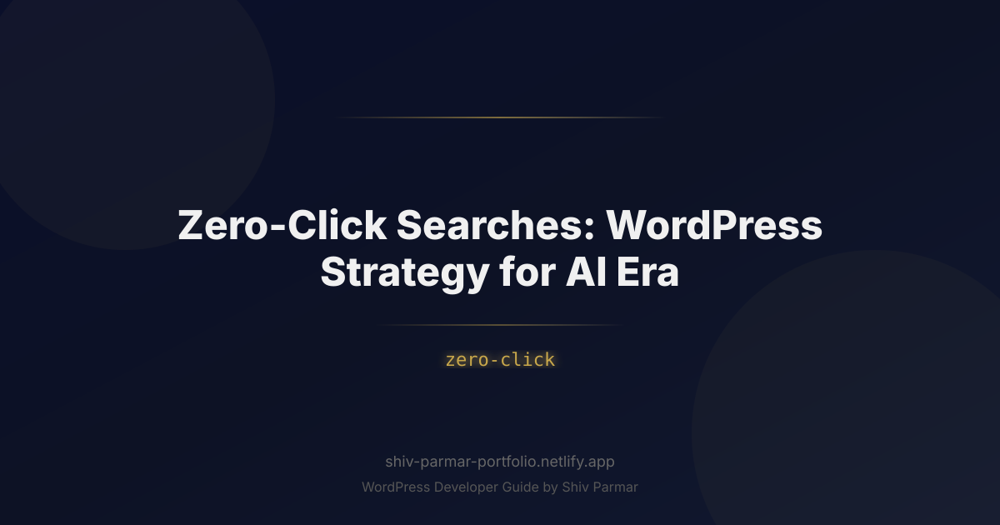

Zero-Click Searches: WordPress Strategy for AI Era | Shiv Parmar
Table of Contents
For more than two decades, the covenant between search engines and web publishers was straightforward: create valuable content, rank in the top ten blue links, and collect organic traffic. That social contract has fundamentally fractured. The rise of Google’s AI Overviews, SearchGPT, Perplexity, and conversational AI agents has transformed search engine results pages (SERPs) from digital directories into self-contained answer engines. Today, the query often ends where it began—directly on the SERP.
This paradigm shift has accelerated the rise of the zero-click search. Instead of clicking through to your WordPress site to read an exhaustive guide, users are greeted by syntheses generated in real time by Large Language Models (LLMs). For digital marketers, content creators, and enterprise publishers operating on WordPress, this reality appears catastrophic at first glance: traditional organic traffic graphs are trending downward, even while keyword impressions remain steady or climb.
Yet panic is not a strategy. Winning in the era of AI search does not mean abandoning SEO; it requires rebuilding your WordPress infrastructure, editorial models, and technical delivery to exploit how machine engines ingest, synthesize, and cite source material. Navigating zero-click queries is no longer about fighting for a transactional click on an introductory definition—it is about positioning your WordPress brand as the indispensable, verified source of truth that AI models must cite, trust, and ultimately route high-intent users toward.
What Are Zero-Click Searches in the AI Era?
A zero-click search occurs when a user executes an online query and finds their answer directly on the search engine results page, eliminating the need to click on any external website link. Historically, zero-click searches were triggered by Google’s Knowledge Graph panels, local packs, currency converters, and featured snippets. If a user asked "what time is it in Tokyo?" or "who won the 1998 World Cup?", Google resolved the intent in milliseconds using structured databases.
In the age of generative AI, zero-click behavior has expanded from simple, deterministic facts to complex, multi-layered informational queries. Modern search engines no longer rely strictly on index lookups. Instead, they deploy Retrieval-Augmented Generation (RAG) frameworks:
- Information Extraction: Search engine AI crawlers scrape the most authoritative top-ranking pages across the web in real time.
- Vector Embedding & Semantic Clustering: The retrieved texts are parsed into semantic chunks to analyze their core claims, data, and context.
- Real-Time Synthesis: The LLM synthesizes these disparate chunks into a unified, conversational answer placed prominently at the top of the SERP.
Consequently, multi-step queries like "how to set up dynamic pricing in WooCommerce without slowing down checkout" are now comprehensively outlined within an AI overview box. The user extracts the procedural framework without once hitting your server. However, this does not mean content is obsolete; it means the *mechanics of exposure* have shifted. In this new ecosystem, being the cited source within an AI search summary represents the modern equivalent of ranking position one.
| Factor | Traditional Search (10 Blue Links) | Generative / AI Search Engine |
|---|---|---|
| User Goal | Browse, evaluate sources, and click through. | Instant answers, unified summarization. |
| Key Metric | Click-Through Rate (CTR) & Sessions. | Entity Citations, Brand Recall, Qualified Conversions. |
| Content Consumption | On-site reading across multiple paragraphs. | Off-site digest via dynamic LLM summaries. |
| Traffic Intent | Mixed (Informational, Navigational, Commercial). | Deeply qualified (Users seeking tools, data, or purchases). |
Why Zero-Click Optimization Matters in 2026
By 2026, the volume of frictionless queries has surged to unprecedented levels. Studies indicate that upwards of 60% of all mobile and desktop searches conclude without an organic click to an external domain. Search providers prioritize conversational retention because keeping users within their native ecosystems maximizes ad impressions, subscription hooks, and platform loyalty.
For WordPress publishers, operating under the assumption that every piece of content will yield measurable, top-of-funnel web traffic is a recipe for stagnation. If your business model measures value exclusively through pageviews, AI search represents an existential bottleneck. However, if your strategy pivots toward brand affinity, source verification, and capturing the remaining high-intent clicks, the zero-click landscape presents massive strategic leverage.
Here is why mastering zero-click strategy is critical in 2026:
- The Death of Fluff Content: Superficial "What is [X]?" articles can no longer drive sustainable traffic. The AI generates that answer instantly. Websites that rely on shallow programmatic SEO are experiencing massive visibility declines.
- The Citation Flywheel: When an AI system cites your WordPress publication as its primary reference, your authority surges. Users who *do* click those citation chips are not casually browsing; they possess high intent, seeking validation, bespoke tools, proprietary data, or services.
- Entity Dominance Drives Search: LLMs process information through knowledge graphs and entity relationships. Optimizing your WordPress site for zero-click queries trains AI systems to recognize your brand as the canonical authority for your topical cluster.
Step-by-Step Guide: Optimizing WordPress for the Zero-Click AI Era
Transitioning from a traditional SEO blueprint to an AI-resilient architecture requires deliberate adjustments to your WordPress technology stack, data modeling, and content structure. Follow this technical roadmap to claim visibility inside AI summaries while generating clicks that matter.
Step 1: Implement Dynamic JSON-LD Entity Schema via WordPress Hooks
AI engines rely on semantic HTML and structured data to verify facts. Out-of-the-box WordPress taxonomy (categories and tags) is insufficient for machine extraction. You need granular, highly interconnected Schema.org markup that ties your articles to real-world entities, authors, and organizations.
Avoid relying solely on heavy third-party plugins that bloat your page speed. Instead, leverage clean, programmatically generated JSON-LD within your theme's functions.php or a custom site-specific plugin. The following example injects comprehensive TechArticle and author attribution data specifically for informational posts:
function add_zero_click_ai_schema() {
if ( is_single() && ! is_admin() ) {
global $post;
$author_id = $post->post_author;
$author_name = get_the_author_meta( 'display_name', $author_id );
$author_url = get_author_posts_url( $author_id );
$schema = [
'@context' => 'https://schema.org',
'@type' => 'TechArticle',
'headline' => get_the_title(),
'description' => get_the_excerpt(),
'datePublished' => get_the_date( 'c' ),
'dateModified' => get_the_modified_date( 'c' ),
'mainEntityOfPage' => get_permalink(),
'author' => [
'@type' => 'Person',
'name' => esc_html( $author_name ),
'url' => esc_url( $author_url ),
'sameAs' => [
'https://www.linkedin.com/in/' . sanitize_title( $author_name ),
]
],
'publisher' => [
'@type' => 'Organization',
'name' => get_bloginfo( 'name' ),
'url' => home_url(),
'logo' => [
'@type' => 'ImageObject',
'url' => esc_url( get_site_icon_url() )
]
],
'speakable' => [
'@type' => 'SpeakableSpecification',
'cssSelector' => ['.ai-answer-block', '.entry-summary']
]
];
echo '<script type="application/ld+json">' . wp_json_encode( $schema, JSON_UNESCAPED_SLASHES | JSON_PRETTY_PRINT ) . '</script>' . "\n";
}
}
add_action( 'wp_head', 'add_zero_click_ai_schema', 20 );
Notice the inclusion of the speakable property targeting .ai-answer-block. This explicitly cues search parsers and voice engines to prioritize that specific DOM element when generating synthesized snippets.
Step 2: Architect Content for "Answer Engine Optimization" (AEO)
To win the zero-click citation, your WordPress content must be engineered for automated extraction. LLMs look for direct, context-free definitions before parsing nuanced explanations. Use the Inverted Pyramid model within the WordPress Block Editor (Gutenberg):
- The Definitive Answer Block: Directly beneath your primary
<h2>or<h3>, provide a self-contained, 40-to-60 word response that immediately answers the heading's implied question without filler words. - Bullet-Point Specifications: Break down processes into ordered lists. Machine learning models strongly prefer parsing lists for procedural queries.
- Contextual Nuance & Edge Cases: Follow up with deep-dive technical nuance that cannot be summarized in a simple sentence. This is the content that forces the user to click when they need comprehensive execution.
Here is how that structure looks in raw WordPress HTML markup:
<!-- wp:heading {"level":3} -->
<h3>What Is the Optimum Server Response Time for AI Crawlers?</h3>
<!-- /wp:heading -->
<!-- wp:paragraph {"className":"ai-answer-block"} -->
<p class="ai-answer-block">The optimum server response time (TTFB) for AI web crawlers is below 200 milliseconds. Sub-200ms response speeds guarantee that LLM fetch workers can ingest raw HTML within strict token timeouts before rendering synthetic search results.</p>
<!-- /wp:paragraph -->
<!-- wp:list -->
<ul>
<li><strong>Critical Threshold:</strong> Under 200ms TTFB</li>
<li><strong>Warning Threshold:</strong> 200ms - 500ms TTFB</li>
<li><strong>Drop-off Risk:</strong> Above 600ms TTFB leads to indexing drops during real-time retrieval.</li>
</ul>
<!-- /wp:list -->
Step 3: Build "Click Magnets" Within Zero-Click Topics
If the AI provides the answer on the SERP, why should anyone visit your WordPress site? Because the AI cannot satisfy operational or interactive intent. You must consciously divide your content into declarative knowledge (which the AI will summarize) and functional assets (which require on-site execution).
Convert informational posts into interactive hubs by baking in elements LLMs cannot easily replicate on the SERP:
- Interactive Calculators & Configurations: Custom JavaScript tools embedded via shortcodes or custom blocks (e.g., ROI calculators, sizing matrices).
- Proprietary Research & Primary Datasets: Embed downloadable CSVs, proprietary survey results, or dynamic data tables that cannot be fully consumed within an AI summary box.
- Custom WordPress Templates & Code Snippets: Offer downloadable GitHub gists, configuration files, or copyable code blocks with built-in sandbox demos.
Step 4: Configure Robots.txt and Crawler Access Controls Strategically
Many publishers mistakenly block all AI bots out of frustration over lost traffic. Blanket-blocking crawlers like GPTBot, PerplexityBot, or Google-Extended via robots.txt does not stop AI search from answering queries about your industry; it simply guarantees that your brand will not be cited as the expert source.
Instead, use WordPress's native robots_txt filter to control access granularly. Maintain open access for crawlers that cite sources, while shielding proprietary data or checkout endpoints:
function manage_ai_crawler_directives( $output, $public ) {
if ( '1' !== $public ) {
return $output;
}
$custom_directives = "\n# Allow citations in Search AI\n";
$custom_directives .= "User-agent: Google-Extended\n";
$custom_directives .= "Allow: /\n\n";
$custom_directives .= "User-agent: PerplexityBot\n";
$custom_directives .= "Allow: /\n\n";
$custom_directives .= "User-agent: GPTBot\n";
$custom_directives .= "Allow: /\n\n";
$custom_directives .= "# Disallow scraping on private resources\n";
$custom_directives .= "Disallow: /wp-json/\n";
$custom_directives .= "Disallow: /wp-admin/\n";
$custom_directives .= "Disallow: /checkout/\n";
return $output . $custom_directives;
}
add_filter( 'robots_txt', 'manage_ai_crawler_directives', 10, 2 );
Step 5: Track AI Search Engine Referrals in WordPress
Traditional analytics platforms often miscategorize referral traffic originating from AI tools as "Direct" or standard "Organic". To monitor the efficacy of your zero-click and AI optimization strategy, you must isolate visits originating from conversational engines.
You can capture AI search engine referrers by hooking into the WordPress template redirect and appending dynamic query arguments or passing the data into your telemetry setup:
function track_ai_referrals() {
if ( is_admin() || ! isset( $_SERVER['HTTP_REFERER'] ) ) {
return;
}
$referrer = sanitize_text_field( wp_unslash( $_SERVER['HTTP_REFERER'] ) );
$ai_platforms = [
'chatgpt.com' => 'ChatGPT',
'perplexity.ai' => 'Perplexity',
'claude.ai' => 'Claude',
'copilot.microsoft.com' => 'Copilot'
];
foreach ( $ai_platforms as $domain => 'source_name' ) {
if ( strpos( $referrer, $domain ) !== false ) {
// Log as custom metadata, trigger an event, or set a temporary cookie
if ( ! isset( $_COOKIE['ai_source'] ) ) {
setcookie( 'ai_source', $domain, time() + 3600, COOKIEPATH, COOKIE_DOMAIN, is_ssl(), true );
}
break;
}
}
}
add_action( 'template_redirect', 'track_ai_referrals' );
Best Practices for Thriving in the AI-Driven Search Ecosystem
Navigating zero-click searches requires shifting your core performance indicators. The websites that will thrive are those that adapt their content philosophy and site architecture to prioritize long-term brand equity over short-lived clickbait.
Prioritize "Information Gain" Over Keyword Coverage
Google’s ranking algorithms actively identify "Information Gain"—the delta of unique data, perspectives, or evidence a page provides compared to pages already in its index. If your WordPress post repeats the exact steps found on ten competitor blogs, the AI has no incentive to reference your domain.
- Publish Original Case Studies: Real-world implementations with verifiable metrics cannot be synthesized out of thin air by an LLM.
- Include Contrarian Views: Challenge consensus wisdom with data-backed reasoning. AI models index divergent viewpoints to balance their generated answers.
- Document Hands-on Experience (E-E-A-T): Use first-person testing logs, unedited screenshots, real failure logs, and step-by-step implementation code.
Build Brand Recall So High That Users Search for You Directly
The ultimate counter-strategy to the zero-click landscape is turning your WordPress site into a destination rather than a transient search result. When your brand itself becomes the entity, users bypass the search engine entirely.
- Inject Unmistakable Authorship: Ensure your author bio pages feature external links to recognized scientific publications, professional profiles, and personal social handles.
- Cultivate Owned Distribution: Transform search visitors into email newsletter subscribers, private community members, or RSS readers. Owned channels are fully insulated from SERP volatility.
- Brand All Visual and Structured Assets: Watermark original technical diagrams, infographics, and framework charts. When AI engines serve images directly inside their interfaces, make sure your brand identity is front and center.
Optimize WordPress Performance for Instant Crawler Rendering
AI search bots operate under strict computational and latency budgets. When an AI search engine fires a real-time retrieval call to assemble an answer, it prioritizes pages that return clean, server-rendered HTML instantaneously. If your WordPress site relies on sluggish client-side JavaScript rendering, bloated page builders, or multiple heavy plugin assets, the crawler’s headless parser will time out and select an alternate source.
- Implement Server-Side Caching: Use high-performance Redis object caching alongside page caching solutions like NGINX FastCGI Cache or LiteSpeed Cache.
- Prune Heavy DOM Trees: Ensure your WordPress theme delivers a lightweight DOM footprint. Deeply nested
<div>wrappers produced by outdated visual visual builders make semantic extraction more computationally expensive for parsers. - Optimize REST API and Headless Feeds: Provide a clean JSON version of your primary articles (via
/wp-json/wp/v2/posts) to make machine-readable versions of your content readily accessible.
Common Mistakes to Avoid
As publishers retool their platforms to mitigate organic traffic drops, many make critical mistakes that compound their losses. Avoid these tactical missteps when optimizing your WordPress property:
1. Trying to "Trick" the AI with Hidden Text or Keyword Walls
In the pre-AI era, content creators could place hidden semantic fragments or keyword-stuffed accordions across pages to capture long-tail featured snippets. Modern LLM-based crawlers evaluate semantic context globally. Over-optimizing text, using microscopic CSS text hacks, or loading low-value FAQ lists will trigger spam filters and result in entity-level penalties that depress overall domain visibility.
2. Abandoning Informational Topics Entirely
Upon realizing that informational terms generate fewer direct clicks, some site owners discontinue top-of-funnel content entirely to focus solely on transactional pages. This breaks topical authority. If an AI search engine does not see your WordPress site publishing comprehensive conceptual knowledge, it will not trust your transactional content when high-intent commercial queries arise. You must continue publishing foundational material, but re-architect it to act as an entity-building baseline.
3. Relying Exclusively on Automated AI Content Creation
Using programmatic AI tools to auto-generate thousands of WordPress posts about generic topics is a self-defeating strategy. You are attempting to feed search engines synthesized copies of data they already possess. AI search models quickly recognize this recursive loop, discarding repetitive content in favor of unique human analyses, original data sets, and verified primary sources.
4. Ignoring the Authority Structure of the Author Profile
A post written by "Admin" or an anonymous pseudonym is severely disadvantaged in the generative AI era. LLM engines cross-reference author entities with academic papers, industry news, external social presence, and digital footprints. If your WordPress site lacks granular author profile pages, transparent editorial guidelines, and clean ProfilePage schema, AI engines will deprioritize your content in favor of recognized subject matter authorities.
Conclusion
This guide covered everything you need to know about Zero-Click Searches: WordPress Strategy for AI Era. By following these steps, you can implement these solutions on your WordPress site today.
If you need help with WordPress development, WooCommerce, or performance optimization, feel free to reach out. I work with clients worldwide and deliver high-quality results.